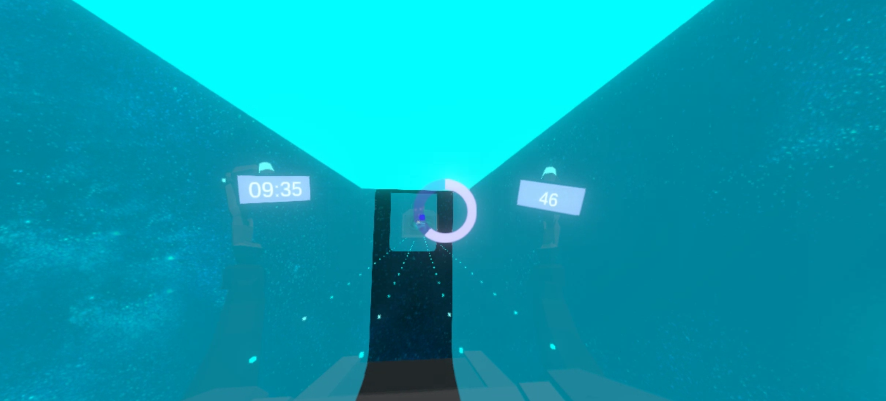
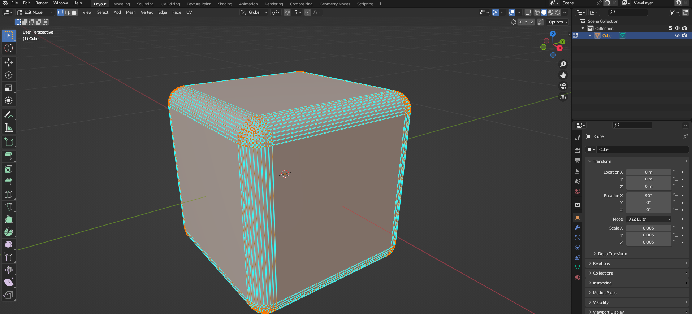

SquatVR
Virtual reality experience developed at H'ability using Unity
In the effort to expand the catalog of VR rehabilitation games involving player movement, especially for more athletic individuals, we were tasked with creating a game where the central motion was squatting. I developed the game from the initial requirements to the final production stage and also designed the environment.

The game is built around a series of obstacles approaching the player. The player must dodge these obstacles by performing squats and side steps. Since the selected movements were chosen by healthcare professionals and are meant to vary throughout the session, my code needed to be highly modular. This presented a challenge for generating the obstacles dynamically.
Another critical consideration was designing obstacles that wouldn’t frighten patients, as panicking could lead to falls. Most workout VR games use walls as obstacles, but for rehabilitation patients unfamiliar with virtual reality, walls could be too intimidating. I opted for transparent, rounded obstacles, which I modeled in Blender, avoiding harsh angles. I created a futuristic environment with a sci-fi aesthetic to give the game a clean, cohesive design.
Since this game involves player movement, we implemented safety boundaries that pause the game and notify the player to recenter before continuing. This was a crucial safety feature to ensure the patient remains within a safe area while playing.